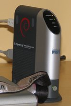

Sistema SouRadio de cualquier lugar
Sou fue desarrollado por JIACP.
Y permite escuchar las principales emisoras de
Colombia y Grupo Unión Radio.
Ha sido desarrollado usando GNU/Linux
y hardware NSLU2, con interfaz web
Cuando estoy aburrido, invento cosas.